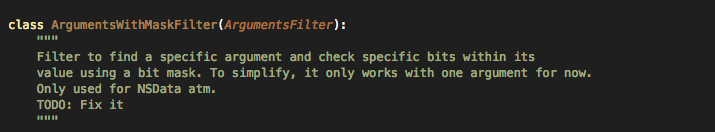

In the previous article, we looked at how we can use Introspy for Black-box assessment of IOS applications. In this article, we will look at how we can use Introspy to set up our own custom signatures and detect them in an application trace. Setting up our own predefined signatures could be useful for cases where you have a found a method in a particular application that seems of particular interest to you and you want to know when it is being called. Introspy already has a list of predefined signatures that it uses to flag vulnerabilities or insecure configurations. However, it also allows us to add our own signatures.
You can find the predefined signatures in Introspy in the signatures.py file inside the analyzer folder.
From here, we can see that a signatures consists of a title, description, a severity level and a filter which consists of the method calls that correspond to the signature. So let’s look at a sample signature.
Over here, you can see a signature that checks whether the application uses Pasteboards or not. Pasteboards are generally very insecure as they can allow an application to copy some data from the Pasteboard into their application. Hence this signature makes sense. You can see that the filter consists of two values, classes_to_match and methods_to_match. You can also specify a parameter args_to_match in your signature. So from this signature, it is pretty much clear that these following method implementations will match the above signature.
Another signature shown in the image below checks for methods that bypass credential validation while connecting to a remote server. This happens in cases where you are using a self singed SSL certificate and would like to trust it everytime without any kind of validation.
For any LibC signature, just set the classes_to_match attribute as C.
Now lets understand a signature that has some arguments also with it as a filter. The filter can be defined using 3 classes which can be found in the file Filters.py. These classes are ArgumentsFilter, ArgumentsNotSetFilter or ArgumentsWithMaskFilter. Here are some screenshots from the code itself that define the purpose of these classes.

Here is a signature written in the Signatures.py file that detects the scenario when some data is written to the keychain without a secure protection domain (pdmn). As you can see, both the ArgumentsFilter and ArgumentsNotSetFilter filters have been used to detect signaturres. The ArgumentsFilter signature is used to find pdmn’s that are insecure whereas ArgumentsNotSetFilter is used to find cases where no accessibility option is provided and hence defaults to kSecAttrAccessibleAlways.
Now lets add a custom signature to the signature.py file. In this case, we are checking for the case whenever someone gets a string saved in NSUserDefaults.
Now run the python script introspy.py file on the saved database file.
In the report under Potential Findings, you will see that our signature was identified in many different places.
Conclusion
In this article, we looked at how we can use Introspy to set up our own custom signatures and detect them in an application. Using these custom signatures when performing static analysis of these applications can be very useful if you are looking to track some specific method implementations.
References